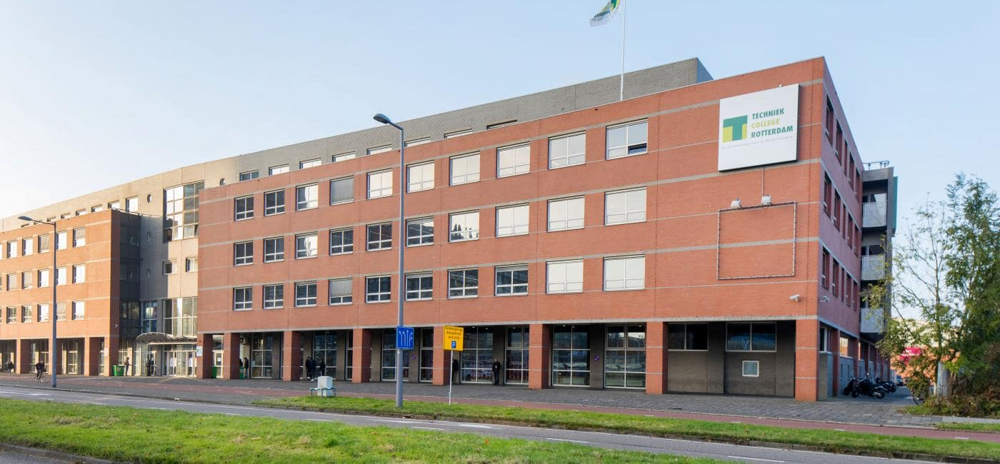
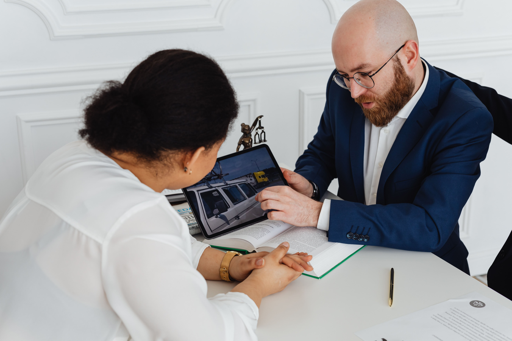

Welcome to my website
This is the website I have made for the parents evening. In the homepage you will find some general information about the website and all the things you can find on the different pages. On top of that, you can also find information about the parents evening. For more information about the school itself, you can check the school website on this website footer, and if you want to know more about this web, scroll down. 
What you can find

There are 10 different pages inside this website, such as the Location guide page, where you can see how to enter the school, where the school is located, and what other things you can find nearby, the Software page, where you can find some general information about HTML, CSS, JavaScript and PHP, the formulary page, where you can fill in your name in case you have a request or a question, the Canvas page, where you can find information about the school app, and many more
Courses
From the smartphone in your hand to the laptop in front of you. From ordering your sneakers online to paying online. A life without computers and the internet is really unthinkable. For you and for companies. In the IT & Online industry, professionals make your day a lot easier. In fact, the world is at your feet. If you love to work with computers, or you would like to know how electronic devices work, or how to make a website then this school is for you! There are different courses in this school which you may like, such as Software Developer, the one I'm following now which involves making websites.
Parents evening
A Parents Evening is an evening where teachers discuss the progress of their students with parents. They also exchange ideas on various topics. In the parents' evening, the teachers and father and/or mother get to know each other. The teacher tells the parents how the child behaves in class and what the activity is like. When parents and teacher meet on such an evening, the pupil is usually not present, but in this case he is.
What is covered in the parents evening
In the parent evening many things are discussed, such as what the students have made and learned so far, what will be made, questions are also asked and answered. A website must also be created for this evening, in this case the website you are currently seeing.
Parents evening video
The video next to this text is a skit. Here you see a teacher calling the parents of his students to see if they will come to the parents evening